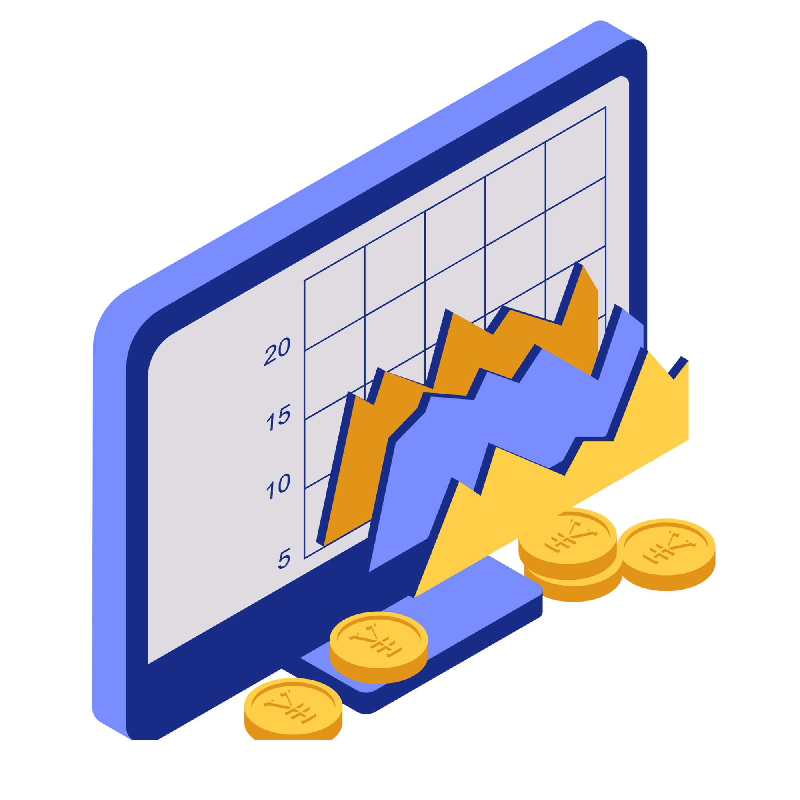

Sa ikatlong quarter ng Araling Panlipunan, marami akong natutunan tungkol sa ekonomiya ng bansa. Naintindihan ko kung paano gumagana ang makroekonomiks, GDP at GNP, implasyon, at iba pang bahagi ng ekonomiya. Nalaman ko rin kung paano nakakaapekto ang mga patakarang pang-ekonomiya sa buhay ng mga mamamayan. Dahil dito, mas naging malinaw sa akin kung bakit mahalaga ang tamang pamamahala ng ekonomiya upang umunlad ang isang bansa. Bilang isang mag-aaral, natutunan ko rin na mahalaga ang pagiging responsable at matalino sa paggamit ng pera at mga yaman.
Sa ikaapat na quarter, natutunan ko ang iba't ibang sektor ng ekonomiya tulad ng agrikultura, industriya, paglilingkod, at impormal na sektor. Naintindihan ko kung gaano kahalaga ang bawat sektor sa pag-unlad ng bansa. Natutunan ko rin ang tungkol sa kalakalang panlabas at kung paano nakikipag-ugnayan ang Pilipinas sa ibang bansa sa pamamagitan ng kalakalan. Dahil sa mga araling ito, mas naunawaan ko kung paano nagtutulungan ang iba't ibang sektor upang mapalago ang ekonomiya. Bilang isang mag-aaral, natutunan ko na mahalagang suportahan ang lokal na produkto at maging responsableng mamamayan para sa kaunlaran ng bansa.